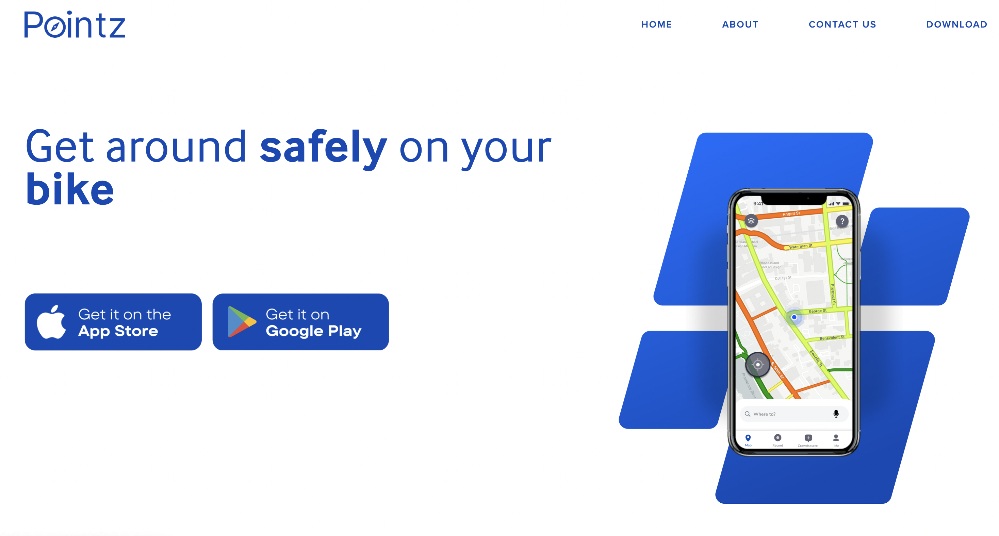
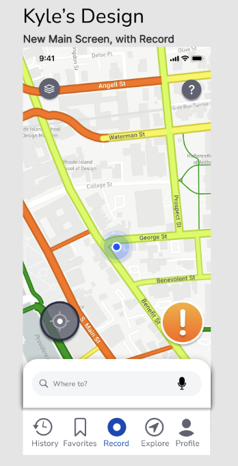
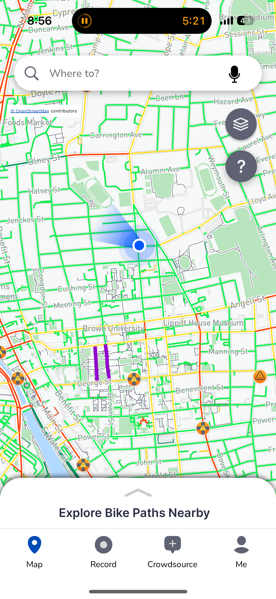

01Role & Team
- I joined Pointz as a marketing intern. After I showed the team my homepage mockup, I was promoted to Product Manager, where I mostly worked on UI/UX.
- I worked with our CTO and two engineers every day to figure out what we could actually build.
- I owned the homepage redesign from the first user interviews all the way to launch.
02Context & Problem

Pointz finds safer, faster bike routes and has an Explore feature, but you couldn’t tell any of that from the homepage.
- Riders couldn’t find Plan, Map or their saved routes right away.
- The app could do a lot, but the first screen didn’t show it, and people were leaving.
03Research
- I interviewed users and ran surveys through our support calls.
- I asked people which features they used most, and which ones they couldn’t find at first.
- Most people said the homepage was confusing and didn’t tell them enough.
04Process
Plan
Talked through priorities and technical limits with the CTO and engineers.
Wireframe
Made wireframes in Figma and kept changing them based on feedback.
Test
Tested the prototypes with the team.
Decide
Agreed on what should be most visible on the homepage.
05Solution


- Bottom navigation bar: the app didn’t have one before.
- Map toggles: icons to turn map features on and off.
- Live map preview: still front and center, so you see routes right away.
06Learnings
- One good design pitch can change your role. Mine turned an internship into a PM job.
- Talking to users gave me answers I could actually act on, and it got the team on board with the design.
- Don’t be shy about sharing your ideas. Speaking up is how this whole project started.